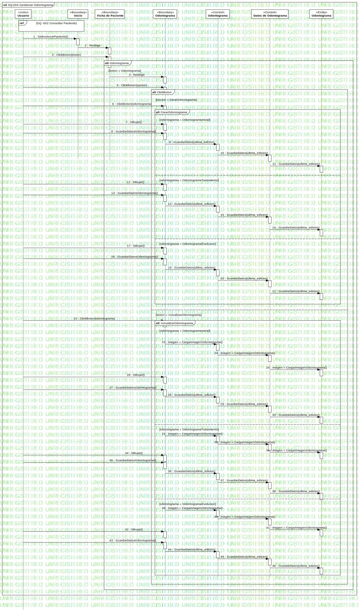

SQ-004 Gestionar Odontograma
UMLInteraction
Dentware
::
Modelo de diseño
::
Modelo de interacción
::
SQ-004 Gestionar Odontograma
Description
none
Diagrams

SQ-004 Gestionar Odontograma
Fragments
(sd 002 Consultar Paciente)
ClickBoton
CrearOdontograma
Odontograma
ActualizarOdontograma
Participants
«Actor»Usuario
«Boundary»Inicio
«Boundary»Ficha de Paciente
«Control»Odontograma
«Entity»Odontograma
«Boundary»Odontograma
«Control»Datos de Odontograma
Messages
SeleccionarPaciente() (Usuario→Inicio)
Redirige (Inicio→Ficha de Paciente)
ClickBoton (Usuario→Ficha de Paciente)
Redirige (Ficha de Paciente→Odontograma)
ClickBoton (Usuario→Odontograma)
ClickBoton (Usuario→Odontograma)
Dibujar() (Usuario→Odontograma)
GuardarDatosOdontograma() (Usuario→Odontograma)
GuardarDatos (Odontograma→Odontograma)
GuardarDatos (Odontograma→Datos de Odontograma)
GuardarDatos (Datos de Odontograma→Odontograma)
Dibujar() (Usuario→Odontograma)
GuardarDatosOdontograma() (Usuario→Odontograma)
GuardarDatos (Odontograma→Odontograma)
GuardarDatos (Odontograma→Datos de Odontograma)
GuardarDatos (Datos de Odontograma→Odontograma)
Dibujar() (Usuario→Odontograma)
GuardarDatosOdontograma() (Usuario→Odontograma)
GuardarDatos (Odontograma→Odontograma)
GuardarDatos (Odontograma→Datos de Odontograma)
GuardarDatos (Datos de Odontograma→Odontograma)
ClickBoton (Usuario→Odontograma)
Devolver odontograma existente (Odontograma→Datos de Odontograma)
Devolver odontograma existente (Datos de Odontograma→Odontograma)
Devolver odontograma existente (Odontograma→Odontograma)
Dibujar() (Usuario→Odontograma)
GuardarDatosOdontograma() (Usuario→Odontograma)
GuardarDatos(ultima_edicion) (Odontograma→Odontograma)
GuardarDatos (Odontograma→Datos de Odontograma)
GuardarDatos (Datos de Odontograma→Odontograma)
Dibujar() (Usuario→Odontograma)
GuardarDatosOdontograma() (Usuario→Odontograma)
GuardarDatos (Odontograma→Odontograma)
GuardarDatos (Odontograma→Datos de Odontograma)
GuardarDatos (Datos de Odontograma→Odontograma)
Dibujar() (Usuario→Odontograma)
GuardarDatosOdontograma() (Usuario→Odontograma)
GuardarDatos (Odontograma→Odontograma)
GuardarDatos (Odontograma→Datos de Odontograma)
GuardarDatos (Datos de Odontograma→Odontograma)
Properties
Name
Value
name
SQ-004 Gestionar Odontograma
stereotype
null
visibility
public
isReentrant
true
Owned Elements
SQ-004 Gestionar Odontograma